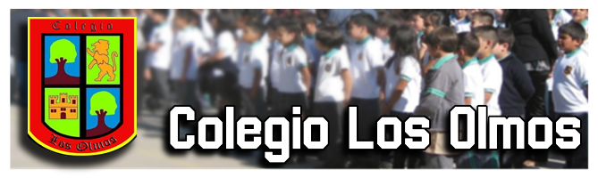
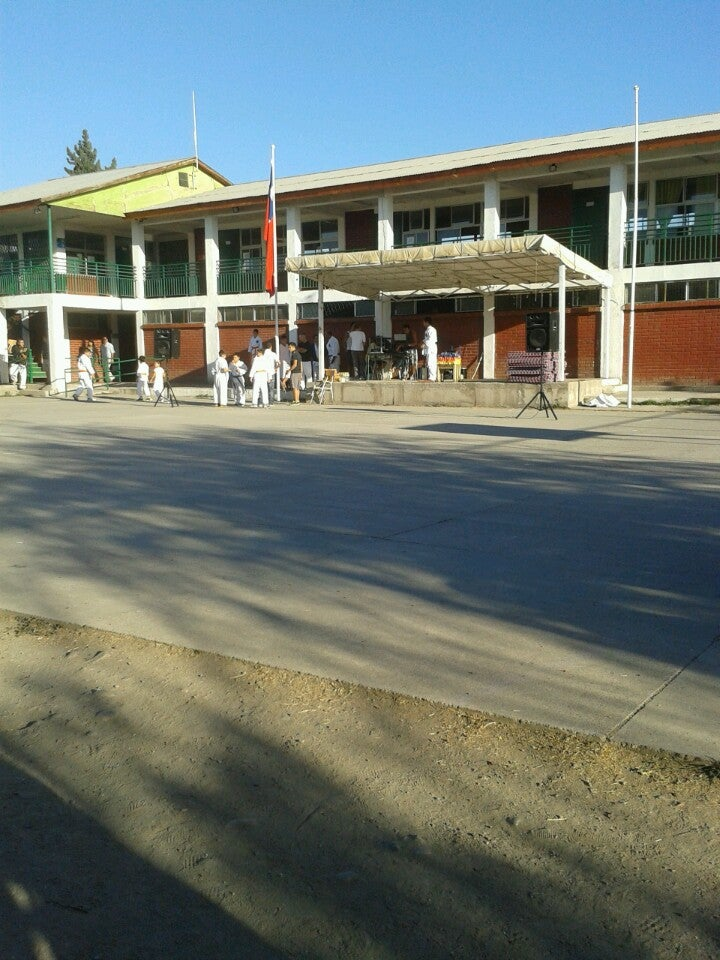
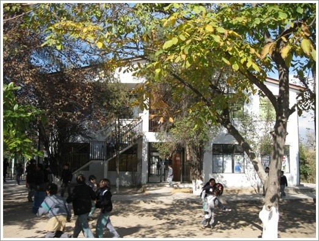

Recursos
Admision
Comunidad

Corporación Educacional Froilán Erasmo Fernández Mesina
Excelencia Academica 2022

Mision
-
“POTENCIAR INTEGRALMENTE A NUESTRA DIVERSIDAD DE ESTUDIANTES,IMPARTIÉNDOLES CONOCIMIENTO, VALORES Y HÁBITOS SOCIALES,ARTÍSTICOS Y DEPORTIVOS,
PARA HACER DE ELLOS PERSONAS SANAS, REFLEXIVAS, RESPETUOSAS Y CON ALTA AUTOESTIMA Y ASÍ EN EL FUTURO CERCANO, SEAN PERSONAS DE BIEN PARA SU FAMILIA Y SU ENTORNO,
ADEMÁS QUE PUEDAN PARTICIPAR COMO BUENOS CIUDADANOS EN EL MEJORAMIENTO DE NUESTRA SOCIEDAD Y HACERLA MÁS DEMOCRÁTICA,LIBERTARIA, IGUALITARIA E INCLUSIVA, SIENDO ASÍ
EN UN FUTURO PRÓXIMO, PERSONAS DE BIEN PARA SUS FAMILIAS Y SU ENTORNO”.

Vision
-
“ACOGER LA DIVERSIDAD Y EL POTENCIAL INTELECTUAL INDIVIDUAL DEL ESTUDIANTADO, IMPARTIENDO UNA EDUCACIÓN INTEGRAL EN LO ACADÉMICO, VALÓRICO, DEPORTIVO Y AMBIENTAL, PROPICIANDO EN ELLOS LA REFLEXIÓN, CREACIÓN Y EMPRENDIMIENTO, COMO LAS HERRAMIENTAS NECESARIAS
PARA UNA INSERCIÓN SOCIAL TRASCENDENTE EN EL PROCESO DE DESARROLLO DEL PAÍS”
Nuestro sello educativo
- “INCORPORAR LA DIVERSIDAD INDIVIDUAL, LA INCLUSIÓN Y LA TOLERANCIA, EN UN CLIMA DE RESPETO HACIA LAS NORMAS ESTABLECIDAS EN LA INSTITUCIÓN”
- “PROPENDER EL TRATO CORDIAL Y UN AMBIENTE ARMONIOSO Y DE SANA CONVIVENCIA EN NUESTRO ESTABLECIMIENTO”
- “DETECTAR, FOMENTAR Y POTENCIAR LAS HABILIDADES INDIVIDUALES DE NUESTROS NIÑOS Y NIÑAS, A TRAVÉS DE LAS DIFERENTES ÁREAS DEPORTIVAS – RECREATIVAS, ARTÍSTICO – CULTURALES, CÍVICO – SOCIALES, MEDIO AMBIENTE Y DE EMPRENDIMIENTO”
- “FOMENTAR LA AUTOESTIMA, EL ESPÍRITU CRITICO Y LA RESILENCIA”